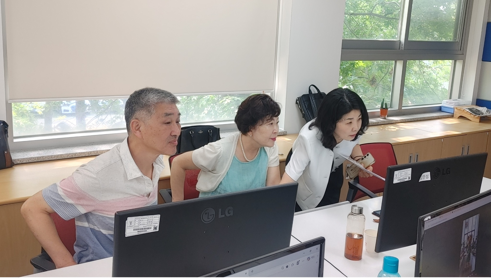
STEP 01 · 첫 만남
AI를 처음 경험하다
생성형 AI와 처음 대화하며, 질문에 따라 결과가 달라지는 새로운 방식의 도구를 직접 체험했습니다.
그때의 생각: “컴퓨터가 내 말을 이해하고 답을 만든다는 것이 신기했다.”
퇴직 이후,
새로운 배움을 만나
글결이라는 두 번째 인생 프로젝트가 시작되었습니다.
퇴직 후 처음에는 조금 더 여유로운 삶을 생각했습니다. 그러던 중 공무원연금공단의 퇴직자 교육 프로그램을 알게 되었고, 그 프로그램의 하나로 한국폴리텍대학 인천캠퍼스에서 진행된 생성형 AI 활용 교육에 참여하게 되었습니다.
“지금도 새로운 것을 시작할 수 있을까?”
공무원연금공단이 마련한 퇴직자 교육의 기회와 한국폴리텍대학의 현장 중심 수업은, 제가 AI를 처음 배우고 직접 활용해 보는 출발점이 되었습니다. 그 경험은 결국 ‘글결’이라는 새로운 프로젝트의 씨앗으로 이어졌습니다.
“퇴직은 끝이 아니라, 새로운 배움을 시작할 수 있는 시간이었다.”
한국폴리텍대학 인천캠퍼스에서 생성형 AI를 배우기 시작했습니다. 처음에는 용어도 화면도 낯설었지만, 질문하고 결과를 확인하는 과정이 반복되면서 AI는 점차 이해할 수 있는 도구가 되었습니다.
중요한 것은 정답을 외우는 것이 아니라, 더 나은 질문을 만드는 일이었습니다.
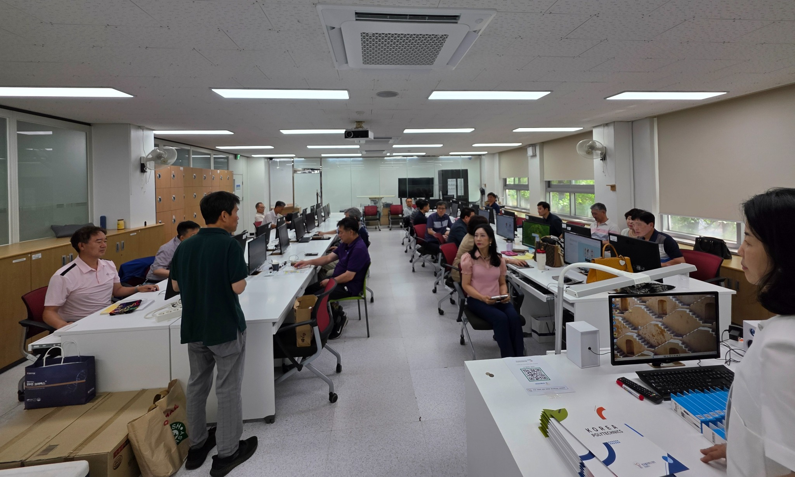
배움의 세 단계가 실전의 세 단계로 이어지면서, 단순한 실습은 나만의 프로젝트가 되었습니다.

생성형 AI와 처음 대화하며, 질문에 따라 결과가 달라지는 새로운 방식의 도구를 직접 체험했습니다.
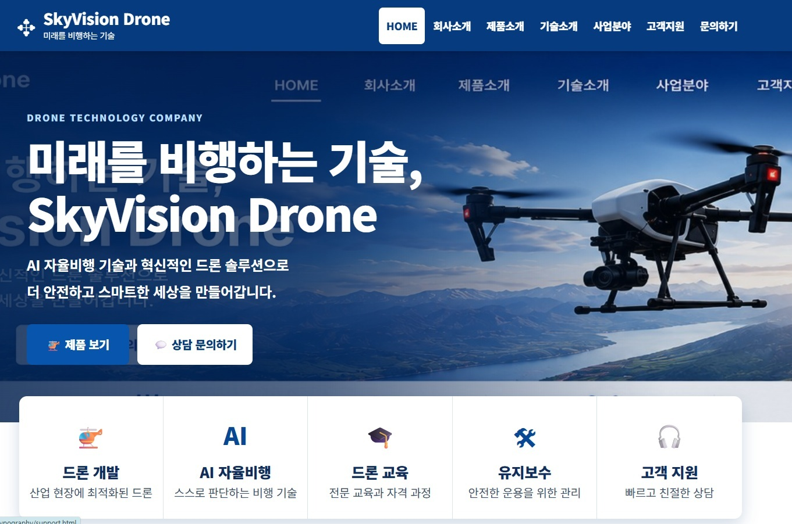
설명을 듣는 데서 끝내지 않고 드론과 여행 홈페이지 실습을 직접 수행하며 활용법을 익혔습니다.
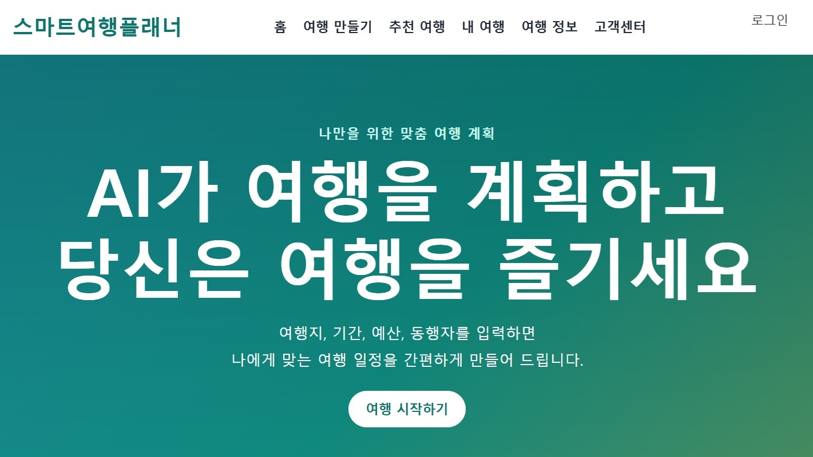
입력한 생각이 실제 화면과 서비스 형태로 나타나는 과정을 보며, AI의 실질적인 쓰임을 이해하게 되었습니다.
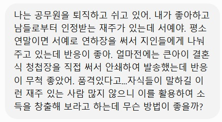
배운 기능을 그대로 따라 하는 단계를 넘어, 나의 서예 경험과 기록을 담는 홈페이지를 구상하기 시작했습니다.
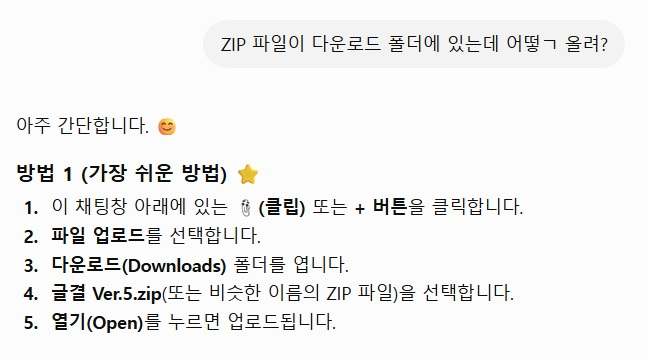
제목, 구성, 디자인, 기능을 놓고 계속 질문했습니다. 답이 마음에 들지 않으면 다시 묻고, 화면을 고치며 방향을 다듬었습니다.
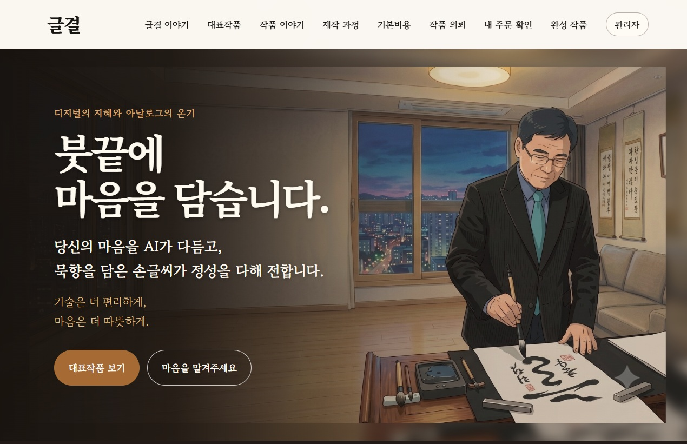
마침내 글결의 첫 모습을 확인했습니다. 그러나 완성은 끝이 아니라 더 나은 기록과 새로운 기능을 향한 출발점이 되었습니다.
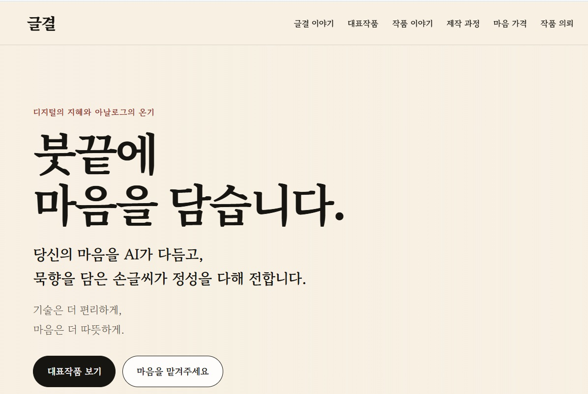
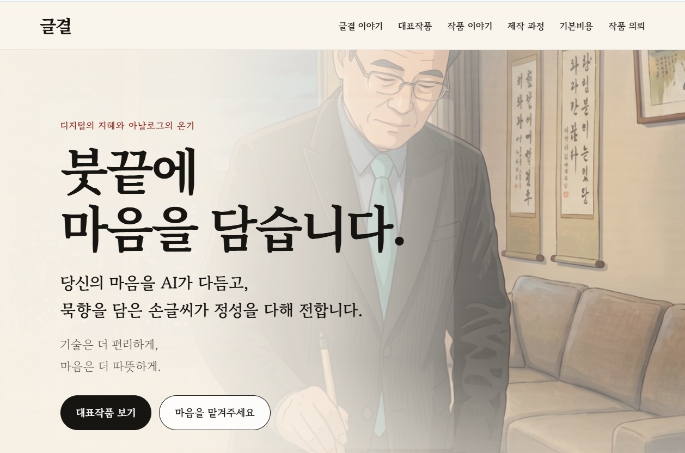
초기 화면은 여러 차례 바뀌었습니다. 보기에는 작은 수정이었지만, 그 안에는 수많은 질문과 판단이 쌓여 있었습니다.
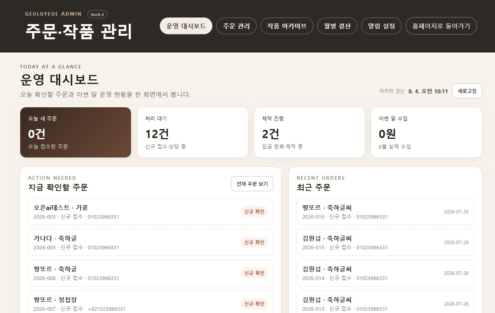
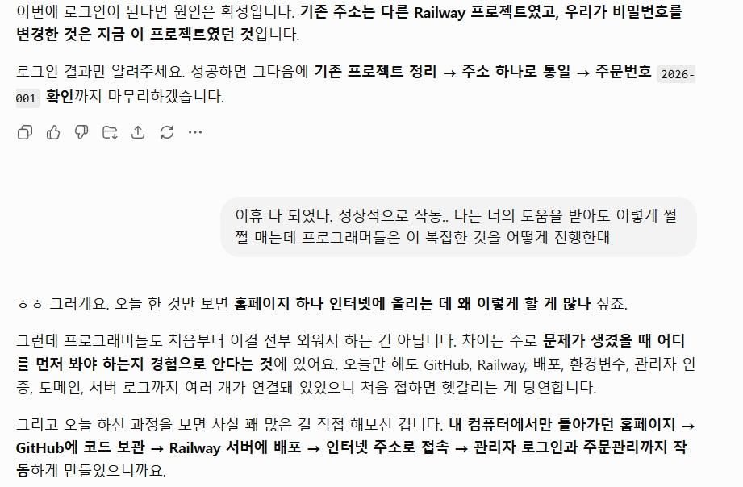
“글결은 홈페이지 하나를 만든 일이 아니라, 내 경험을 새로운 방식으로 기록하기 시작한 사건이었다.”
공무원연금공단에서 시작된 작은 배움이 AI 교육과 실전을 거쳐 하나의 브랜드 이야기로 이어졌습니다.
공무원연금공단의 퇴직자 교육 프로그램을 통해 한국폴리텍대학 인천캠퍼스의 생성형 AI 활용 과정에 참여하면서 새로운 배움이 시작되었습니다.
AI를 체계적으로 배우고 직접 실습하는 첫 교육이 시작되었습니다.
배운 내용을 실제 웹 화면과 서비스 형태로 구현하며 AI의 쓰임을 확인했습니다.
서예, 글, 삶의 기록을 모아 둘 수 있는 나만의 공간을 구상했습니다.
사업계획, 화면 구성, 문구, 관리자 기능을 수없이 수정하며 글결을 구체화했습니다.
아이디어가 실제 홈페이지와 관리 가능한 서비스 형태로 완성되었습니다.
작품 소개, 주문 관리, 관리자 기능과 Story를 하나의 홈페이지 안에서 연결하며 글결을 발전시키고 있습니다.
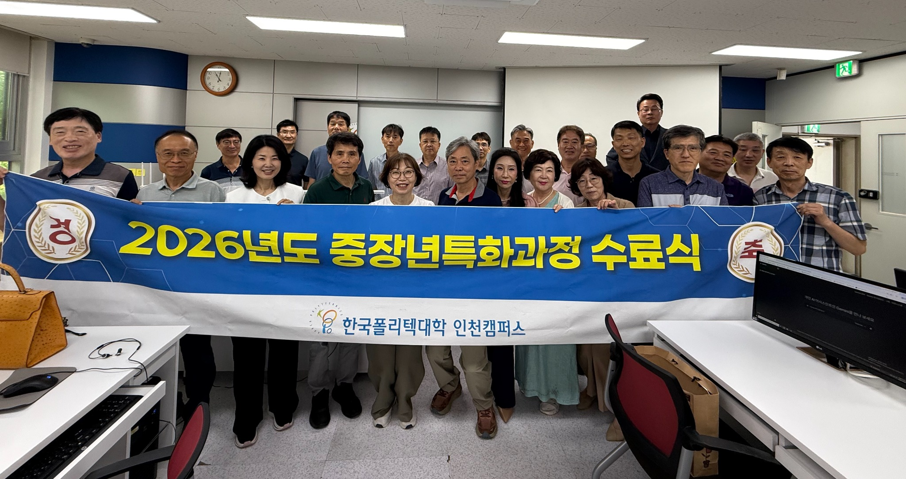
퇴직 이후 새로운 배움의 기회를 마련해 주신 공무원연금공단과, 생성형 AI를 직접 배우고 실습할 수 있도록 교육의 장을 열어 주신 한국폴리텍대학 인천캠퍼스에 깊이 감사드립니다.
교육 과정이 원활하게 진행되도록 세심하게 살펴 주신 관계자와 담당자 여러분, 낯선 기술 앞에서 망설이지 않도록 친절하게 지도해 주신 교수님과 강사진께도 진심으로 감사드립니다.
여러분이 마련해 주신 한 번의 교육 기회는 단순한 수료로 끝나지 않았습니다. 그 배움은 ‘글결’이라는 홈페이지로 이어졌고, 제게 퇴직 이후의 새로운 길을 열어 주었습니다.
“그 첫걸음이 없었다면 지금의 글결도, 이 기록도 시작되지 못했을 것입니다.”
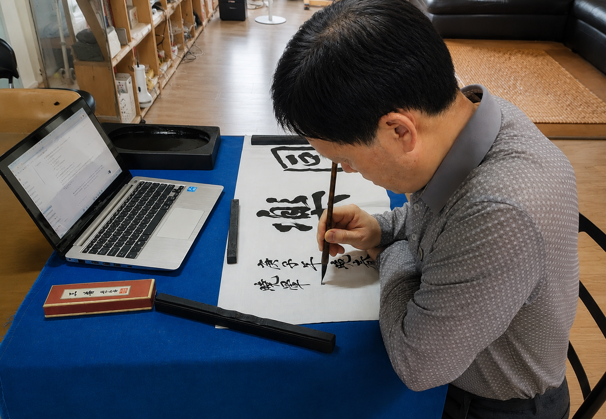
공무원연금공단의 퇴직자 교육 프로그램은 새로운 배움의 문을 열어 주었고, 한국폴리텍대학 인천캠퍼스의 교수진과 관계자들은 AI를 이해하고 직접 실행할 수 있도록 이끌어 주었습니다. 그 도움과 배움 위에서 ‘글결’ 홈페이지가 만들어졌습니다.
붓은 여전히 내 손에 있습니다. 다만 이제는 생각을 정리하고, 길을 찾고, 새로운 가능성을 실현하는 데 AI가 함께합니다.